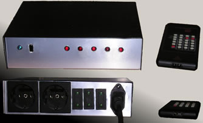
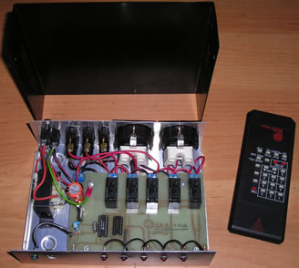

| Τηλεχειρισμός δωματίου | |||||||||||||||||||||||||||||||||||||||||||
|
Εισαγωγή
Ο καθένας μπορεί να συμπληρώσει τη δικιά του λίστα από τις συσκευές που μπορεί να ελέγξει από το κρεβάτι του με ένα απλό τηλεχειριστήριο. Αυτή η κατασκευή δίνει λύση στην απαράδεκτα εκνευριστική κατάσταση του να πρέπει να σηκωθείς μέσα στη νύχτα για να κλείσεις ένα διακόπτη ή μία συσκευή που είναι στην άλλη άκρη του δωματίου. Περιγραφή κατασκευής Το κύκλωμα είναι εξαιρετικά απλό. Πάνω αριστερά βλέπουμε ένα τυπικό τροφοδοτικό βασισμένο στο 7805. Στο κέντρο βλέπουμε τον μικροεπεξεργαστή PIC16F84, ένα από τα μικρότερα μέλη της οικογένειας των PIC. Μόνο λίγες ακίδες από αυτόν χρησιμοποιούνται πραγματικά και έτσι μένουν αρκετές ελεύθερες για επεκτάσεις του κυκλώματος οι οποίες γίνονται διαθέσιμες μέσω της ακίδοσειράς J7. Το ολοκληρωμένο U2, ένα TSOP1736 λαμβάνει το σήμα από το τηλεχειριστήριο, το αποδιαμορφώνει και το οδηγεί στο ποδαράκι 6 του PIC. Ο τελευταίος αποκωδικοποιεί το σήμα, ελέγχει αν ο κωδικός αντιστοιχεί σε κάποιο ρελέ και αν ναι αναλαμβάνει να αλλάξει την κατάσταση εξόδου του. Τα ρελέ οδηγούνται με την βοήθεια του ολοκληρωμένου U4, ένα ULN2003. Αυτό είναι μία συστοιχία από τρανζίστορ τύπου darlington και αναλαμβάνει να ενισχύσει το ρεύμα εξόδων του PIC σε τέτοιο βαθμό ώστε να οδηγούν με ασφάλεια τα ρελέ. Το Led D2 λειτουργεί ως ένδειξη τροφοδοσίας και επιπλέον ως ένδειξη λήψης σήματος από το τηλεχειριστήριο. Με αυτό τον τρόπο μπορείτε να ελέγχετε αν έχει το τηλεχειριστήριο μπαταρίες. Τα led-άκια D3-D7 συνδέονται παράλληλα με τα ρελέ εξόδου και δείχνουν αν το αντίστοιχο ρελέ είναι ενεργοποιημένο ή απενεργοποιημένο.
Πρακτικά Ας έρθουμε λοιπόν και στο πρακτικό μέρος. Tα υλικά που θα χρειαστείτε είναι τα εξής:
Η κατασκευή μπορεί να κατασκευαστεί στο τυπωμένο κύκλωμα που φαίνεται παρακάτω. Αν θέλετε να οδηγήσετε μεγάλα φορτία από κάποιο ρελέ πιθανώς να χρειαστεί να ενισχύσετε κάποια από τις γραμμές εξόδου, κολλώντας ένα χάλκινο καλώδιο από πάνω της. Η κατασκευή είναι σχετικά εύκολη και αναμένεται να λειτουργήσει αμέσως μόλις την τροφοδοτήσετε.
Φωτογραφίες  Η μπροστά και η πίσω όψη του δέκτη και το τηλεχειριστήριο.  Εικόνα από μέσα! |
|||||||||||||||||||||||||||||||||||||||||||